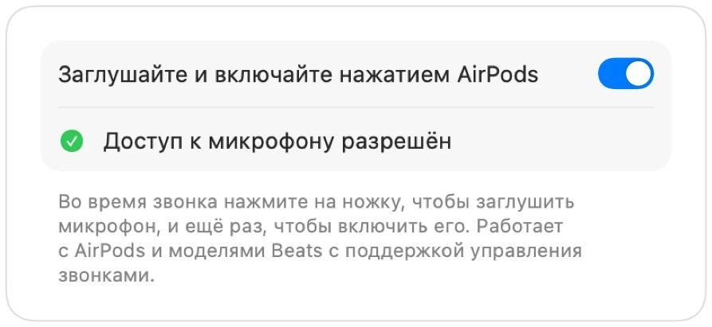

Как заглушить Google Meet с AirPods на Mac
На iPhone нажатие на ножку AirPods отключает звук в звонке. На Mac сервис Google Meet работает в Chrome, а Chrome не передает это нажатие веб-страницам. Вы нажимаете на наушники, слышите сигнал ошибки, и микрофон продолжает передавать ваш голос.
Muffle решает эту проблему для каждого совещания в Meet. Приложение само перехватывает нажатие AirPods и отключает микрофон Mac, поэтому в звонке будет тишина, даже если вкладка свернута.
Как заглушить микрофон в Google Meet с помощью AirPods
- 1
Установите Muffle и разрешите доступ к микрофону при запросе.
- 2
Подключитесь к звонку Google Meet в Chrome, Safari, Arc или Edge.
- 3
Нажмите на ножку AirPods один раз, чтобы заглушить микрофон. Значок Muffle станет красным.
- 4
Нажмите еще раз, чтобы включить звук. Вы также можете нажать Control-Option-M в любом приложении.

- Meet может показывать, что микрофон включен, ведь Muffle отключает сам микрофон, а не кнопку в интерфейсе Meet. Пока значок Muffle красный, в звонке вас никто не слышит.
- Включите параметр «Начинать каждый звонок с заглушённым микрофоном», чтобы входить в любую конференцию с выключенным звуком.
Вопросы и ответы
Почему нажатие на AirPods не заглушает Google Meet?
Chrome не поддерживает жест заглушения AirPods в macOS для веб-звонков, поэтому macOS некуда передать нажатие. Muffle берет эту задачу на себя.
Разве стандартного сочетания клавиш в Meet недостаточно?
Сочетание Command-D в Meet работает только тогда, когда активна вкладка со звонком. Сочетание клавиш и нажатие AirPods в Muffle работают из любого приложения.